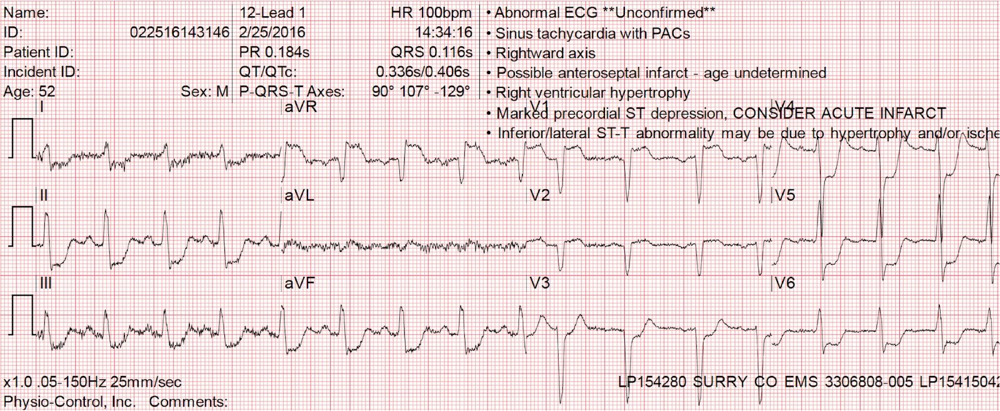
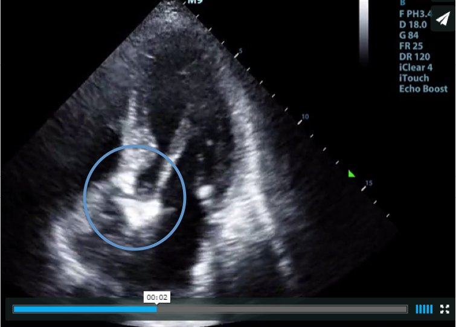

19/11/2016 — Thiếu máu cục bộ dưới nội tâm mạc lan tỏa trên điện tâm đồ. Thân chung động mạch vành trái? Bệnh 3 nhánh mạch vành? Không!
Bản dịch tiếng Việt của bài "Diffuse Subendocardial Ischemia on the ECG. Left main? 3-vessel disease? No!" – Dr. Smith’s ECG Blog. Giữ nguyên toàn bộ 2 hình ảnh và 1 video của bản gốc.
Ca này do một số đồng nghiệp ở Wake Forest đóng góp:
Tác giả: Jason Stopyra, Shannon Mumma, Sean O’Rourke và Brian Hiestand.
Bài được Smith biên tập
CA BỆNH:
Một bệnh nhân nam 52 tuổi có tiền sử
tăng huyết áp và bệnh phổi tắc nghẽn mạn tính (COPD) gọi đội cấp cứu ngoài viện (EMS) vì đau ngực,
mệt yếu và buồn nôn. Ấn tượng ban đầu của nhân viên cấp cứu ngoài viện về bệnh nhân
là bệnh nhân đang nguy kịch. Bệnh nhân bị rối loạn
ý thức, da tái nhợt và xám xịt. Huyết áp ban đầu
là 80/bắt mạch (palp), tần số tim 104, nhịp thở 20, độ bão hòa
oxy 94% và đường huyết mao mạch 268. Khám ngoài ra
còn đáng chú ý có tiếng khò khè nghe rõ, thời gian đổ đầy
mao mạch chậm, lú lẫn, khó làm theo y lệnh và khó trả lời
câu hỏi.
Một điện tâm đồ 12 chuyển đạo được ghi ngay lập tức:


Bình luận của Smith:
Bệnh nhân này không được siêu âm tại giường. Nếu được làm, siêu âm sẽ cho thấy một đặc điểm hiện rõ trên đoạn siêu âm này (tuy nhiên, chức năng thất trái của bệnh nhân này sẽ không tốt bằng trong đoạn phim này):
Đoạn này được ghi với thất trái nằm ở bên phải.
Hãy nhìn vào đường ra động mạch chủ. Bạn thấy gì? Câu trả lời ở ảnh tĩnh bên dưới.
Diễn biến lâm sàng
Nhân viên cấp cứu ngoài viện đã phát “báo động STEMI (Code STEMI)” và
chuyển bệnh nhân gần 50 dặm đến trung tâm y tế tuyến cuối
gần nhất. Trên đường đi, EMS cho bệnh nhân uống aspirin 325mg
nhưng không dùng nitroglycerin do hạ huyết áp ban đầu. Ngoài
ra, bệnh nhân được truyền 750 mL dịch hồi sức, giúp huyết áp
cải thiện thoáng qua.
Bệnh nhân được đưa thẳng vào phòng thông
tim để can thiệp mạch vành qua da (PCI), bỏ qua khoa cấp cứu (ED). Tại phòng thông tim,
huyết áp của bệnh nhân vẫn thấp. Chụp mạch vành chẩn đoán
chỉ phát hiện bệnh động mạch vành mức độ tối thiểu, nhưng
có van động mạch chủ vôi hóa nặng, ‘bất động’. Chụp động mạch
chủ không phát hiện bóc tách động mạch chủ. Trong lúc làm thủ thuật,
nhu cầu oxy của bệnh nhân tăng dần và bệnh nhân được đặt nội khí quản để
bảo vệ đường thở và đảm bảo oxy hóa. Siêu âm tim qua thành ngực
cho thấy phân suất tống máu thất trái dưới 15%, hẹp van động mạch chủ khít cực kỳ nặng, phì đại thất trái (LVH)
nặng và buồng thất trái nhỏ. Bệnh nhân được chuyển đến đơn vị chăm sóc mạch vành (CCU) để
tiếp tục tối ưu hóa điều trị nội khoa, tại đây bệnh nhân được đặt
ống thông động mạch phổi.
Đây là ảnh tĩnh của đoạn siêu âm ở trên:
Ảnh tĩnh này cho thấy vùng cần quan tâm:


Đây là xơ hóa van động mạch chủ và có liên quan rất chặt với hẹp van động mạch chủ.
Nếu thấy hình ảnh này, bạn nên làm Doppler qua van.
Van động mạch chủ trong ví dụ này cũng hẹp khít trên Doppler
Bệnh nhân tiếp tục mất ổn định
huyết động với cung lượng tim thấp và áp lực đổ đầy thất trái rất cao.
Dù đã dùng nhiều thuốc vận mạch liều cao, bệnh nhân vẫn tiếp tục
hạ huyết áp. Ngày hôm sau, bệnh nhân được
nong van động mạch chủ bằng bóng vì hẹp van động mạch chủ nặng có triệu chứng
kèm hạ huyết áp và triệu chứng NYHA độ IV. Sau nong van,
chênh áp qua van của bệnh nhân cải thiện nhưng vẫn còn đáng kể. Bệnh nhân
được tiếp tục dùng thuốc vận mạch tối đa nhưng vẫn
hạ huyết áp. Khoảng bảy giờ sau khi trở về từ
phòng nong van, bệnh nhân ngừng tim vô tâm thu.
BÀN LUẬN:
Điện tâm đồ 12 chuyển đạo mà EMS ghi ban đầu cho
bệnh nhân này cho thấy thiếu máu cục bộ nặng, với ST chênh xuống sâu ở “dưới-bên” và ST chênh lên soi gương ở chuyển đạo aVR. Mặc dù hình ảnh này được xem là một “tương đương STEMI” và hướng dẫn ACC/AHA thậm chí còn chấp thuận dùng thuốc tiêu sợi huyết cho hội chứng vành cấp (ACS) có điện tâm đồ như thế này, điện tâm đồ này không đáp ứng các tiêu chuẩn thường dùng
để báo cho kíp phòng thông tim về một ca báo động STEMI sắp được chuyển
đến.
Bình luận của Smith:
Hãy nhớ rằng ST chênh xuống không định khu được vùng thiếu máu cục bộ, vì vậy “dưới-bên” không cho bạn biết thiếu máu cục bộ nằm ở đâu – thực ra, đây là thiếu máu cục bộ dưới nội tâm mạc lan tỏa. ST chênh lên ở chuyển đạo aVR là soi gương của ST chênh xuống do thiếu máu cục bộ dưới nội tâm mạc
lan tỏa này; vectơ ST chênh xuống hướng về II và V5, do đó vectơ ST chênh lên hướng về aVR.
Tác giả viết tiếp:
ST chênh lên (STE) ở aVR thường do tắc nghẽn thân chung
động mạch vành trái (OR 4.72), và có liên quan với tử vong tim mạch
trong bệnh viện (OR 5.58).1 Trong một số loạt ca, ST chênh lên từ 1 milimét trở lên đã được chứng minh có độ nhạy 80% và độ đặc hiệu 90% đối với
bệnh thân chung động mạch vành trái nặng và/hoặc bệnh 3 nhánh mạch vành có thể
cần phẫu thuật bắc cầu chủ vành (CABG).2
Người nhân viên cấp cứu ngoài viện tinh ý đã nhận ra khả năng này và phát báo động STEMI (CODE STEMI).
Bình luận của Smith:
Tôi sẽ sửa câu trên thành: “Trong bối cảnh ACS, STE ở aVR thường do tắc nghẽn thân chung hoặc tắc nghẽn 3 nhánh….” Điện tâm đồ không thể chẩn đoán nguyên nhân của thiếu máu cục bộ; nó chỉ cho biết có thiếu máu cục bộ, dù do bất kỳ nguyên nhân nào. Thiếu máu cục bộ dưới nội tâm mạc lan tỏa thường do mất cân bằng cung-cầu khi không có ACS hơn là do ACS. Các nguyên nhân thường gặp của mất cân bằng cung-cầu là thiếu oxy, rối loạn nhịp nhanh, hạ huyết áp (do bất kỳ nguyên nhân nào), thiếu máu, hẹp động mạch vành không có ACS, hoặc tăng áp lực (trong thất).
–Cung cấp oxy được quyết định bởi: 1) khả năng chuyên chở oxy, 2) độ bão hòa O2, và 3) lưu lượng mạch vành. Do đó, khi không có cơ chế xơ vữa-huyết khối (ACS), thiếu máu cục bộ cơ tim có thể do:
1) Hạ huyết áp (hạ huyết áp tâm trương, vì toàn bộ lưu lượng mạch vành diễn ra trong thì tâm trương, do áp lực trong cơ tim lúc tâm thu làm ngừng dòng máu). Hạ huyết áp dĩ nhiên có thể là hậu quả của một rối loạn nhịp chậm hoặc rối loạn nhịp nhanh.
2) Thiếu oxy, bao gồm các chất độc của quá trình phosphoryl hóa oxy hóa như HS, CO, CN.
3) Thiếu máu, hoặc các chất độc với hemoglobin như methemoglobin hay CO
4) Hẹp động mạch vành cố định làm hạn chế dòng chảy.
–Nhu cầu oxy được quyết định bởi:
1) Hậu tải (sức cản lớn đối với dòng máu ra khỏi thất trái), tăng lên khi huyết áp cao hoặc khi hẹp van động mạch chủ
2) Tần số tim: nhịp nhanh xoang
–Bệnh nhân này có cả giảm cung cấp (hạ huyết áp) lẫn tăng nhu cầu do 1) hậu tải cao (áp lực thất trái rất cao vì sức cản đường ra do hẹp van động mạch chủ) và 2) tần số tim cao.
–Điều này cho thấy việc nghe tim vẫn có thể có giá trị nhất định, để nghe tiếng thổi van động mạch chủ. Thực ra, siêu âm tại giường thậm chí có thể phát hiện hẹp van động mạch chủ nặng. Nếu bạn dùng được Doppler thì bạn có thể chẩn đoán được bệnh này.
Bình luận của các tác giả: Sốc tim trong bối cảnh hẹp van động mạch chủ nặng.
Khi gặp nhân viên cấp cứu ngoài viện và kíp thông tim tại phòng thông tim, tôi
đã sẵn sàng để thấy bệnh động mạch vành (CAD) nặng, nhưng các mạch vành lại không tắc nghẽn. Tình trạng
hẹp van động mạch chủ (AS) nặng và sốc tim nặng kèm theo của bệnh nhân này
nhiều khả năng đã tạo ra hình ảnh điện tâm đồ này, dẫn
đến một thách thức rất khó khăn cho kíp điều trị nội trú của chúng tôi.
Về bản chất, sốc tim là vấn đề
giảm cung lượng tim. Điều này có thể thứ phát sau nhiều yếu tố,
bao gồm giảm sức co bóp cơ tim (tức là nhồi máu cơ tim),
rối loạn nhịp, bệnh lý van tim, shunt, hoặc tắc nghẽn
đường ra.
Cũng như các trường hợp sốc khác, có thể cân nhắc
hồi sức dịch ban đầu. Trong sốc tim, dịch có thể làm nặng thêm
phù phổi đi kèm suy tim cấp, nhưng vẫn có thể
cần thiết để hỗ trợ tình trạng huyết động của
bệnh nhân.
Các hướng dẫn của Hội Tim mạch Hoa Kỳ (American Heart Association) đã
không thay đổi trong nhiều thập kỷ với khuyến cáo dùng thuốc tăng co bóp cơ tim,
như dobutamine và dopamine, trong các trường hợp sốc tim.3
Có bằng chứng cho thấy việc dùng
phối hợp cả dobutamine và dopamine ở liều dưới tối đa,
thay vì dùng một thuốc đơn độc, mang lại lợi ích cho bệnh nhân.
Lợi ích bao gồm cải thiện huyết áp động mạch trung bình (MAP) và cung lượng tim của bệnh nhân,
đồng thời giảm thiểu lượng oxy cơ tim tiêu thụ
khi cung lượng tim (CO) tăng.4 Điều này rất quan trọng, vì
những bệnh nhân này có thể đã có thiếu máu cục bộ cơ tim ở một mức độ nào đó.
Điều này đặc biệt quan trọng với bệnh nhân được trình bày ở trên, do
mức tiêu thụ oxy nền vốn đã tăng
trong AS vì tắc nghẽn đường ra.
Bình luận của Smith:
Trong một thử nghiệm ngẫu nhiên lớn so sánh dopamine với norepinephrine (11) trong điều trị sốc, được công bố sau các khuyến cáo nêu trên, dopamine có nhiều biến cố bất lợi hơn (đặc biệt là rối loạn nhịp nặng, và đặc biệt là rung nhĩ). Trong phân nhóm bệnh nhân sốc tim, dopamine làm tăng tử vong 33% so với norepinephrine, có ý nghĩa thống kê. Do đó, norepinephrine là lựa chọn tốt hơn dopamine hay dobutamine trong sốc tim (như ở bệnh nhân này). Dobutamine có thể được ưu tiên ở những bệnh nhân không hạ huyết áp nặng và có sức cản mạch máu cao.
Tác giả viết tiếp:
Một thuốc tăng co bóp cơ tim
khác có thể cân nhắc là milrinone vì thuốc làm giảm sức cản mạch hệ thống (SVR) và tăng cung lượng tim; tuy nhiên,
cần thận trọng vì cơ chế dược lý của
milrinone có thể gây giãn mạch và làm nặng thêm tình trạng hạ huyết áp.
Khi thuốc vận mạch không duy trì được huyết
áp, có thể cân nhắc nong van bằng bóng. Đây là thủ thuật
trong đó một ống thông được đưa vào qua động mạch đùi, và
đẩy lên để đầu ống thông nằm ở đoạn xa so với động mạch dưới đòn
trái. Sau đó một quả bóng được luồn theo ống thông, được bơm phồng
và xẹp lần lượt theo thì tâm trương và tâm thu. Thủ thuật này đã được
khuyến cáo như một cầu nối đến phẫu thuật ở những bệnh nhân không đủ điều kiện
phẫu thuật.5 [người dịch: phần mô tả kỹ thuật ở trên thực chất là của bóng đối xung động mạch chủ (IABP), không phải nong van bằng bóng] Đáng tiếc là thủ thuật này nhìn chung
chỉ sẵn có ở các trung tâm y tế lớn.6,7 Phẫu thuật
sửa chữa AS, bằng thay van động mạch chủ qua ống thông (TAVR) hoặc thay van động mạch chủ bằng phẫu thuật (SAVR), là điều trị triệt để cho
bệnh lý này. Tuy nhiên, cần lưu ý rằng can thiệp phẫu thuật
cấp cứu ở bệnh nhân AS không ổn định có liên quan
với tỷ lệ tử vong đáng kể, từ 30-50%.8
Điều trị giãn mạch trong AS khít
Mặc dù không áp dụng cho ca bệnh trên do
bệnh nhân bị hạ huyết áp, nitroprusside có thể phù hợp cho bệnh nhân có
phù phổi trong bối cảnh suy tim cấp thứ phát do AS.
Dù từ lâu được cho là chống chỉ định trong
AS do tình trạng phụ thuộc tiền tải của bệnh này, đã có một số
bằng chứng cho thấy nitroprusside có lợi cho những bệnh nhân này. Trong một nghiên cứu không đối chứng quan trọng, nitroprusside dùng cho bệnh nhân AS khít và suy tim phân suất tống máu
giảm (EF trung bình 21%, MAP trung bình 81 mm Hg) đã cải thiện đáng kể
chỉ số tim, không có bất kỳ đợt hạ huyết áp,
thay đổi điện tâm đồ do thiếu máu cục bộ, rối loạn nhịp hay khó thở nào.9 Tiêu chuẩn loại trừ duy nhất của nghiên cứu này là hạ huyết áp, được định nghĩa là cần dùng thuốc tăng co bóp hoặc thuốc vận mạch đường tĩnh mạch (dobutamine, dopamine, epinephrine, milrinone, norepinephrine hoặc phenylephrine) hoặc huyết áp động mạch hệ thống trung bình dưới 60 mm Hg. MAP trung bình của những bệnh nhân này là 81 +/- 13.
Hơn nữa, một
nghiên cứu đã so sánh bệnh nhân có AS với bệnh nhân không có AS bị phù phổi
cấp được dùng nitrat. Không có
khác biệt đáng kể về tỷ lệ bệnh nhân ở mỗi nhóm
bị hạ huyết áp sau khi bắt đầu điều trị. Tuy nhiên, có
ghi nhận rằng một khi đã bị hạ huyết áp, bệnh nhân có
AS vừa và nặng dễ bị
hạ huyết áp kéo dài dù đã can thiệp hơn.10
Hướng dẫn ACC/AHA năm 2014 về Xử trí Bệnh nhân Bệnh van tim, có trích dẫn bài báo này, đưa ra khuyến cáo sau:
“KHUYẾN CÁO NHÓM IIb 1. Điều trị giãn mạch có thể hợp lý nếu được sử dụng kèm theo dõi huyết động xâm lấn trong xử trí cấp ở bệnh nhân hẹp van động mạch chủ (AS) nặng mất bù (giai đoạn D) có triệu chứng suy tim NYHA độ IV. (Mức bằng chứng: C) Ở những bệnh nhân đến viện với AS nặng và suy tim NYHA độ IV, có thể dùng biện pháp giảm hậu tải nhằm ổn định bệnh nhân trước khi thay van động mạch chủ (AVR) khẩn. Theo dõi xâm lấn áp lực đổ đầy thất trái, cung lượng tim và sức cản mạch hệ thống là thiết yếu vì tình trạng huyết động mong manh của những bệnh nhân này, ở họ việc sức cản mạch hệ thống giảm đột ngột có thể dẫn đến giảm cấp tính cung lượng tim qua van động mạch chủ bị tắc nghẽn. Tuy nhiên, một số bệnh nhân lại được hưởng lợi nhờ cung lượng tim tăng lên khi sức cản mạch hệ thống được điều chỉnh giảm dần một cách chậm rãi, do tổng hậu tải thất trái giảm. Nên tiến hành AVR sớm nhất có thể ở những bệnh nhân này.”
KẾT LUẬN:
Các yếu tố tương tác lẫn nhau trong những ca hẹp van động mạch chủ
nặng chính là điều khiến những bệnh nhân này rất khó
xử trí, và các biện pháp điều trị nhắm vào khắc phục một vấn đề thường làm trầm trọng
thêm tác động của một vấn đề khác. Nếu bệnh nhân bị suy
hô hấp, cần bảo đảm đường thở và hô hấp, bằng
biện pháp không xâm nhập hoặc xâm nhập. Tiếp theo, cần ổn định huyết
áp của bệnh nhân. Thông thường, thuốc phù hợp nhất
sẽ là một thuốc tăng co bóp cơ tim, cân nhắc thêm một thuốc
vận mạch nếu tụt huyết áp kéo dài. Khi bệnh nhân đã ổn định,
lúc đó mới có thể xác định mức độ tổn thương cơ tim và lập kế hoạch
điều trị triệt để.
Bình luận của Smith:
Chăm sóc hỗ trợ thường bị xem nhẹ trong xử trí sốc tim. Công hô hấp đòi hỏi cung lượng tim đáng kể và do đó tạo thêm gánh nặng cho tim. Thở máy kèm thuốc giãn cơ giúp loại bỏ tới 50% nhu cầu oxy và có thể cho tim được nghỉ ngơi. Tôi sẽ đặt nội khí quản ngay lập tức cho một bệnh nhân nặng đến mức này.
Về các biện pháp điều trị xâm lấn khác, bóng đối xung động mạch chủ (12, 13) có vẻ hiệu quả trong các nghiên cứu không ngẫu nhiên, và điều này cũng hợp lý: bóng trong động mạch chủ bơm phồng trong thì tâm trương, làm tăng áp lực tâm trương và do đó tăng dòng chảy mạch vành. Bóng cũng xẹp xuống trong thì tâm thu, điều mà bình thường sẽ làm giảm hậu tải; tuy nhiên, trong bối cảnh hẹp van động mạch chủ, hậu tải chủ yếu do van quyết định, chứ không phải do sức cản phía sau van.
Bình luận cuối cùng của Smith:Không rõ điều gì đã khởi phát tình trạng mất ổn định của bệnh nhân này. Bất kỳ thay đổi sinh lý nào cũng có thể biến AS “còn bù” thành AS “mất bù”. Chẳng hạn: nhiễm khuẩn huyết, chảy máu, mất nước, thiếu oxy và ACS nhẹ. Bệnh nhân này có buồng thất trái nhỏ – điều bất thường ở người bị AS, chức năng thất trái kém và áp lực đổ đầy cao – nhưng có lẽ là do LVH nặng. Vì áp lực đổ đầy thất trái được ghi nhận là cao, buồng thất trái nhỏ này không phải là hậu quả của giảm thể tích tuần hoàn. Dù thế nào đi nữa, một khi AS đã mất bù, vì bất kỳ lý do gì, việc xử trí cực kỳ khó khăn do áp lực tưới máu mạch vành thấp và nhu cầu oxy cao.
TÀI LIỆU THAM KHẢO:
Trước hết, một bài blog hay khác về hẹp van động mạch chủ: https://www.emdocs.net/management-of-the-crashing-aortic-stenosis-patient/ (xử trí bệnh nhân hẹp van động mạch chủ đang suy sụp nhanh)
1.
Taglieri N, Marzocchi A, Saia F, và cs. Short- and long-term prognostic
significance of ST-segment elevation in lead aVR in patients with
non-ST-segment elevation acute coronary
syndrome. Am J Cardiol 2011;108:21-8.
2.
Kosuge M, Ebina T, Hibi K, và cs. An early and simple predictor of
severe left main and/or three-vessel disease in patients with
non-ST-segment elevation acute coronary syndrome.
Am J Cardiol 2011;107:495-500.
3.
Overgaard, Christopher; Dzavik, Vladimir.
Contemporary Reviews in Cardiovascular Medicine. Inotropes and
Vasopressors: Review of Physiology and Clinical Use in Cardiovascular
Medicine. Tạp chí Circulation. 2008;118:1047-1056.
4.
Richard, C; và cs. Combined Hemodynamic Effects of Dopamine and Dobutamine in Cardiogenic Shock. Tạp chí Circulation 67, số 3, 1983.
5.
Safian RD, Berman AD, Diver DJ, và cs. Balloon aortic valvuloplasty in 170 consecutive patients. N Engl J Med 1988;319:125-30
6.
Rahimtoola SH. Catheter balloon valvuloplasty for
severe calcific aortic stenosis: a limited role. Tạp chí J Am Coll Cardiol
1994;23:1076-1078
7.
Moreno PR, Jang IK, Newell JB, Block PC, Palacios
IF. The role of percutaneous aortic balloon valvuloplasty in patients
with cardiogenic shock and critical aortic stenosis. Tạp chí J Am Coll Cardiol
1994;23:1071-1075
8.
Hutter AM Jr, De Sanctis RW, Nathan MJ, và cs. Aortic valve surgery as an emergency procedure. Circulation 1970;41:623-627
9.
Umesh N. Khot, MD; và cs. Nitroprusside in
Critically Ill Patients with Left Ventricular Dysfunction and Aortic
Stenosis. N Engl J Med 2003; 348:1756-1763, 1/5/2013.
10.
Claveau, D; và cs. Complications Associated with
Nitrate Use in Patients Presenting with Acute Pulmonary Edema and
Concomitant Moderate or Severe Aortic Stenosis. Annals of Emergency
Medicine. Tháng Mười năm 2015; 66(4):355-362.
12. Folland ED, và cs. Intraaortic Balloon Counterpulsation as a temporary support measure in decompensated critical aortic stenosis. J Am Coll Cardiol. 1985;5(3):711-716.
http://content.onlinejacc.org/article.aspx?articleid=1111078 (bài trên JACC về bóng đối xung động mạch chủ trong hẹp van động mạch chủ khít mất bù)
13. Olcay A. và cs. Cardiogenic shock in the setting of severe aortic stenosis: role of intra-aortic balloon pump support. Heart 2011;97:838-843
http://heart.bmj.com/content/97/10/838.short (bài của Olcay A. và cs. trên tạp chí Heart về bóng đối xung động mạch chủ trong sốc tim do hẹp van động mạch chủ nặng)
14. Nishimura RA và Otto CM, và cs. 2014 AHA/ACC Guideline for the Management
of Patients With Valvular Heart Disease. Journal of the American College of Cardiology 63(22):e57-e185; ngày 10 tháng Sáu năm 2014.